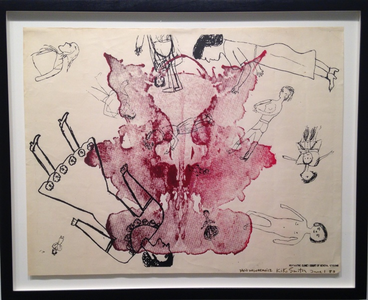

File:1983 Kiki Smith Psychiatric Clinic-Court of General Sessions 17.5x22.jpg
From David Wojnarowicz Knowledge Base
{kind=link}
{kind=link}
{kind=link}
{kind=link}
{kind=link}
{kind=link}

Size of this preview: 737 × 600 pixels. Other resolutions: 295 × 240 pixels | 2,697 × 2,195 pixels.
{kind=link}
{kind=link}
Original file (2,697 × 2,195 pixels, file size: 1.39 MB, MIME type: image/jpeg)
Untitled (Psychiatric Clinic: Court of General Sessions), 1983. Screenprint and lithograph, 26 3/16 x 40 1/8 inches, sheet. Edition of 10. Whitney Museum of American Art, New York; Purchase, with funds from the Print Committee 2002.190. Courtesy of the Estate of David Wojnarowicz and P.P.O.W, New York
File history
Click on a date/time to view the file as it appeared at that time.
| Date/Time | Thumbnail | Dimensions | User | Comment | |
|---|---|---|---|---|---|
| current | 12:52, 14 March 2017 |  | 2,697 × 2,195 (1.39 MB) | Scott (Talk | contribs) | Untitled (Psychiatric Clinic: Court of General Sessions), 1983. Screenprint and lithograph, 26 3/16 x 40 1/8 inches, sheet. Edition of 10. Whitney Museum of American Art, New York; Purchase, with funds from the Print Committee 2002.190. Courtesy of the... |
- You cannot overwrite this file.
File usage
The following 2 pages link to this file:
{kind=link}
{kind=link}
{kind=link}
{kind=link}